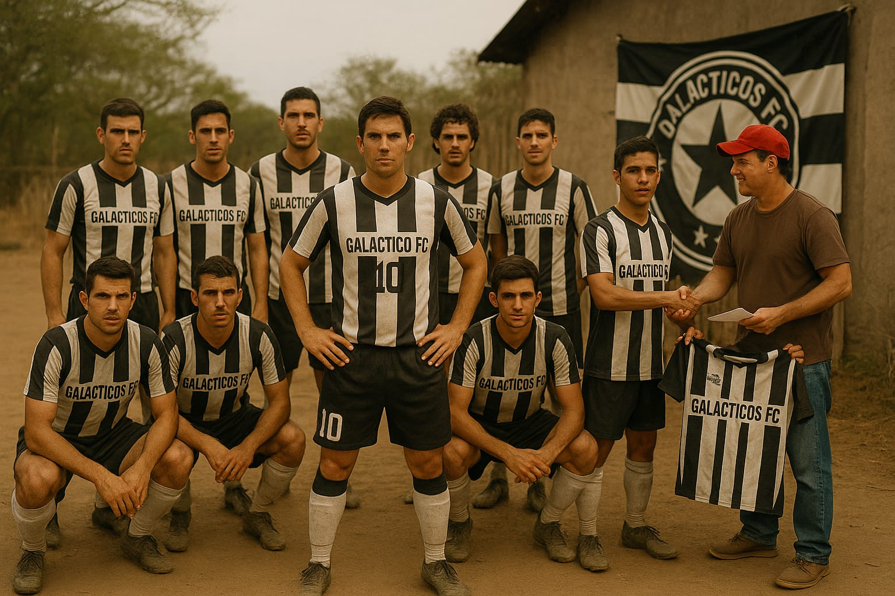

Nuestra Historia
Galácticos FC – El Club de las Estrellas

Fundación y visión (2010):
Galácticos FC fue fundado el 1 de julio de 2010. Detrás del proyecto estaba Alejandro Marín, empresario visionario. El club nació con la misión de devolverle al fútbol la magia del espectáculo y la técnica, uniendo a leyendas consagradas y jóvenes promesas bajo una misma camiseta.
Una constelación de estrellas (2011–2014):
El club causó una revolución en el mercado de fichajes al atraer a algunos de los nombres más grandes del fútbol:
Lionel Messi, el mago argentino, llegó en 2011 para ser el eje del proyecto.
Cristiano Ronaldo, fichado en 2012, formó una dupla legendaria con Messi.
Neymar Jr. trajo juventud, habilidad y carisma al ataque.
Luis Suárez aportó su instinto asesino dentro del área.
Dani Alves y Marcelo reforzaron las bandas con velocidad y técnica.
Juan Román Riquelme, aunque cerca del retiro, fue fichado como mentor creativo y referente del mediocampo.
Javier Palermo – El Arquitecto del Medio Campo
Junto a ellos, Galácticos FC apostó por talentos emergentes como:
Daniel Gómez, un mediocampista europeo con visión y capacidad box-to-box, que se convirtió en ídolo por su entrega.
Carlos Fernández, un delantero joven y potente con olfato goleador, formado en la cantera del club
Con Riquelme en sus últimos años, Palermo se volvió el cerebro del equipo, conectando la defensa con la delantera y orquestando el ritmo del juego. Su sociedad con Daniel Gómez, un mediocampista de ida y vuelta fue clave para mantener el equilibrio en un equipo plagado de atacantes.
Época dorada (2015–2019):
Durante este tiempo, Galácticos FC dominó Europa:
3 Copas Libertadores (2016, 2017, 2018).
2 Campeonatos Nacional.
1 Supercopa (2017).
1 Torneo apertura (2018).
Palermo fue titular indiscutido en las tres finales europeas, y en 2017 fue elegido Mejor Mediocampista de Europa. Carlos Fernández, joven delantero formado en la cantera del club, también explotó en esta etapa y se convirtió en pieza fundamental del recambio generacional.
Una constelación en el campo:
El equipo jugaba con una formación ofensiva 4-3-3.
El legado (2020–actualidad):
Tras la retirada de algunas de sus estrellas y la marcha de otras a ligas menores, Galácticos FC inició una nueva etapa. Daniel Gómez se convirtió en capitán y guía de una nueva generación de talentos, mientras Carlos Fernández lideraba la ofensiva. El club invirtió fuertemente en infraestructura y en su academia, que ha producido varias joyas europeas en los últimos años.
Hoy en día, Galácticos FC sigue siendo un símbolo de grandeza, un club que representa el ideal del fútbol como arte, unión y pasión.
Estadio:
Estadio Galáctico, ubicado en España, con capacidad para 80,000 espectadores, es considerado uno de los templos del fútbol moderno.
Lema del club:
"Donde juegan los dioses del balón ".